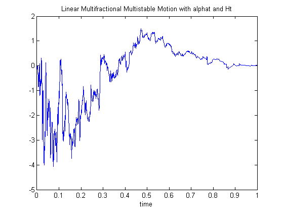
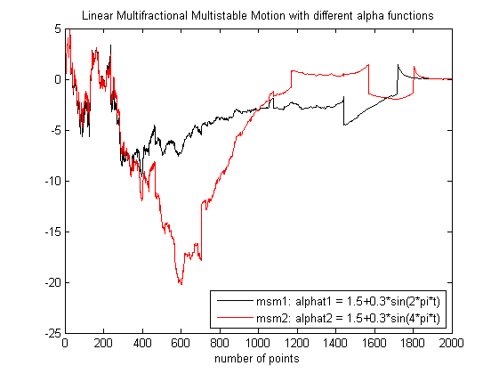
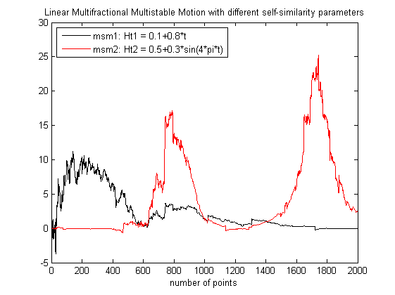

| FRACLAB Functions |
|
Generates a Linear Multifractional Multistable Motion
MSM = msmlinmfrac(N,ALPHA,H,M,m)
MSM = msmlinmfrac(...,SEED)
[MSM, MSMN] = msmlinmfrac(...)
MSM = msmlinmfrac(N,ALPHA,H,M,m) Generates the linear multifractional multistable motion, MSM, using a sample size, N, and a stability function, ALPHA, a self-similarity function, H, a kernel cut-off parameter, M and a number of discretization steps, m. The parameters N,M and m are positive integers and this triplet should be chosen so that the value m*(N+2*M) is a power of 2. ALPHA is in (0,2) and H is in (0,1). This allows to model a process whose index of stability and self-similarity parameter vary in time.
MSM = msmlinmfrac(...,SEED) Generates the linear multifractional multistable motion, MSM, with a specific random seed, SEED. This is useful to generate the same path several times or to compare the paths of different MSMs.
[MSM, MSMN] = msmlinmfrac(...) Generates the linear multifractional multistable motion, MSM, and its normalized signal MSMN.
N = 1000; H = 0.5; M = 12; m = 32;
t = linspace(0,1,N); alphat = eval('1.5+0.3*sin(2*pi*t)'); Ht = eval('0.1+0.8*t');
msm = msmlinmfrac(N,alphat,Ht,M,m);
figure; plot(t,msm);
title('Linear Multifractional Multistable Motion with alphat and Ht'); xlabel('time')

N = 2000; M = 24; m = 32; t = linspace(0,1,N); Ht = eval('0.1+0.8*t');
alphat1 = eval('1.5+0.3*sin(2*pi*t)'); alphat2 = eval('1.5+0.3*sin(4*pi*t)');
msm1 = msmlinmfrac(N,alphat1,Ht,M,m,1000);
msm2 = msmlinmfrac(N,alphat2,Ht,M,m,1000);
figure; plot(msm1,'k'); hold on; plot(msm2,'r');
legend('msm1: alphat1 = 1.5+0.3*sin(2*pi*t)','msm2: alphat2 = 1.5+0.3*sin(4*pi*t)','Location','SouthEast');
title('Linear Multifractional Multistable Motion with different alpha functions');
xlabel('number of points');xlim([0 N])

N = 2000; M = 24; m = 32; t = linspace(0,1,N);
alphat = eval('1.5+0.3*sin(2*pi*t)'); Ht1 = eval('0.1+0.8*t'); Ht2 = eval('0.5+0.3*sin(4*pi*t)');
msm1 = msmlinmfrac(N,alphat,Ht1,M,m,50);
msm2 = msmlinmfrac(N,alphat,Ht2,M,m,50);
figure; plot(msm1,'k'); hold on; plot(msm2,'r');
legend('msm1: Ht1 = 0.1+0.8*t','msm2: Ht2 = 0.5+0.3*sin(4*pi*t)','Location','NorthWest');
title('Linear Multifractional Multistable Motion with different self-similarity parameters');
xlabel('number of points');xlim([0 N])

msmlevy, msmornhulen, asmlinfrac
[1] K. Falconer, J. Lévy Véhel
"Multifractional, multistable, and other processes with prescribed local form",
Journal of Theoretical Probability, Vol. 22 (2009) 375-401
[2] R. Le Guével, J. Lévy Véhel "A Ferguson-Class-LePage series representation of multistable multifractional processes and related processes"
| |
mst_processes | msmornhulen | |